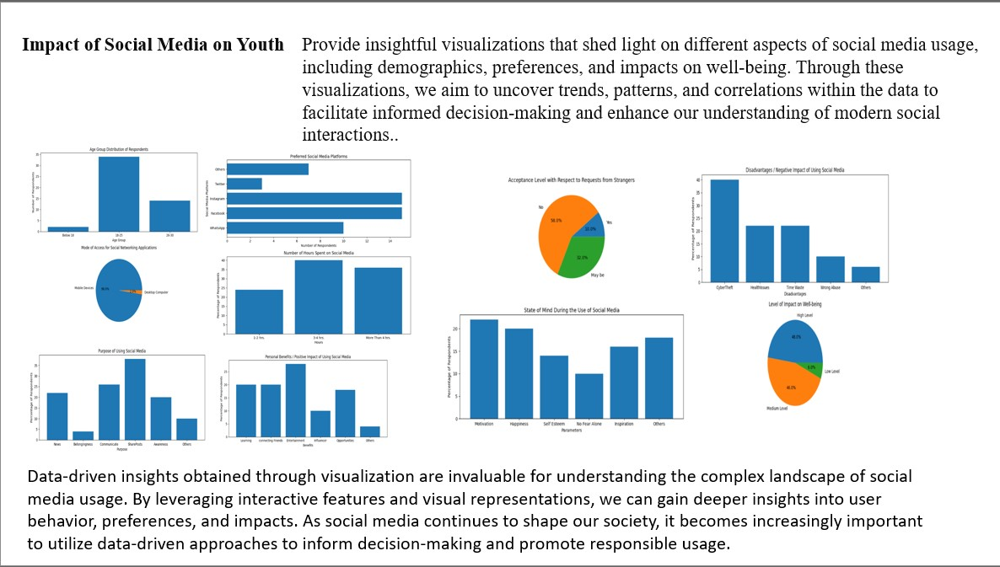

Aspiring Web Developer and Cloud Engineer
This is the homepage of my personal website where you can learn more about me and my projects.
Hello! I'm Sai Mahesh, currently pursuing my masters in computer science. I am looking for a web developer role.
I have one year experience in working with real time projects and i have a passion for creating user-friendly and efficient web applications
This is a project which i have created with refernce with blackboard concept in where i used few AWS services for the implementation
project 1 pictureA simple web app using real-time API data collected from different resources to determine the impact of social media on youth.
